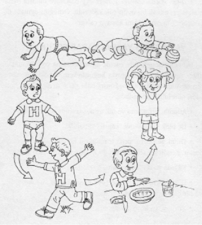
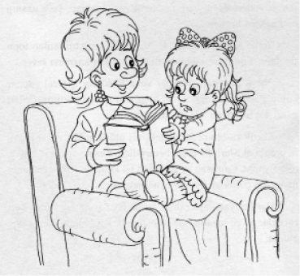
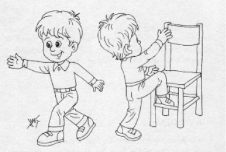

ÇOCUK, BELLİ dönemlerde yine belirli aşamalardan geçerek gelişir, büyür. Bu dönemler bütün çocuklarda benzer özellikler taşır.
Bebekler genellikle 45-53 cm arasında doğarlar ve ağırlıkları ise ortalama 3,5 kg’dır. Kız çocukları, erkeklere oranla biraz daha kısa boylu olarak dünyaya gelirler.
Baş, bedenin geri kalan bölümüne oranla çok büyür. Baş, bebeğin toplam uzunluğunun dörtte birini oluşturmaktadır. Kafatası, altı adet “bıngıldak”a (yumuşak kısım) sahiptir. Bu noktalarda henüz kafatası kapanmamıştır. Bu durum kafatasına ve beyne, büyümeye devam etme imkânı sağlar. Genellikle 1,5 yaşında, bebeğin bıngıldağı ve kafatası boşlukları kapanır, yumuşak kısımları kaybolur.
Doğuştan 3 Aya Kadar Bebek
• Zamanının çoğunu uyumakla geçirir.
• Başını kaldırmayı ve daha sonra havada tutmayı başarır. İnsan yüzüne dikkatle bakar.
• Gözleriyle hareket eden bir nesneyi izlemeyi, bir yüze bakmayı ve gülümseme ile cevap vermeyi öğrenir. Yüksek sesle güler.
• Çevresindeki dünyayı görsel olarak keşfeder.
• Sese, gürültüye tepki gösterir. Kucağa alındığında sakinleşir, susar.
• Annesini tanır (görsel olarak, ama özellikle kokusundan, işitme ile ve bilemediğimiz başka yönleriyle).
• Tutma (kavrama) gibi refleksleri mevcuttur ve eline yerleştirilen nesneyi kavrar.
• Kendiliğinden sesler çıkarır.
3 Aydan 6 Aya Kadar Bebek
• Başını dik tutabilir ve destekle kısa bir süre oturabilir.
• Amaçlı bir şekilde, erişebileceği uzaklıktaki nesneyi tutmaya çabalar ve kendisine sunulan bir nesneye elini uzatır.
• Kendisiyle oynanınca eğlenir, mutlu olur.
• Nesneleri ağzına götürür.
• Gördüğü sahayı genişletmeye çabalar. (Mesela; yüz üstü yatıyorsa kollarına dayanarak, sırt üstü yatıyorsa baş ve omuzlarını kaldırarak…)
• İçten güler ve yetişkinin oyunlarına tepki olarak sevinç çığlıkları atar. Kucağa alınmaktan hoşlanır.
• Kaybolan bir oyuncağı aramaya başlar. Çıngırağı, biberonu ve emziğiyle oynar.
6 Aydan 9 Aya Kadar Bebek
• Kısa bir süre kendi başına (desteksiz) oturabilir.
• Sırt üstü yatarken dönüp yüz üstü yatabilir.
• Bir nesne veya kişiye doğru emekleyebilir.
• Kollarından tutulursa ayakta durabilir.
• Aynadaki görüntüsüne gülümser, kendisi ile görüntüsü arasındaki farkı anlayabilir.
• Bir nesneyi elden ele geçirebilir ve nesneyi her iki elinden biriyle tutabilir.
• Nesneleri baş ve işaret parmakları ile kavrayabilir.
• Eşyaları atarak eğlenir. İsmini duyunca döner.
• Sözel anlamı olmayan çeşitli heceler mırıldanır.
• Aile fertlerinin yüzlerini tanır ve yabancı yüzlerden korkabilir. Annesinin kucağından ayrılmak istemez.
• Kendine göre oyunlara (el çırpma gibi) katılmaya başlar.
9 Aydan 12 Aya Kadar Bebek
• Kendi kendine ayağa kalkabilir (örneğin; bir yere tutunarak) ve iki elinden tutulduğunda yürür. Daha sonra ise tek elinden tutulduğunda, ya da kendisi bir yere tutunarak, yürür.
• Bir sesi taklit edebilir (sözgelimi iki nesneyi bir birine vurarak).
• Duyduğu bir sesi tekrarlar.
• İki veya üç kelimeyi söylemeyi öğrenir.
• Kısa bir komutu ya da yasaklamayı anlar.
• Dünyayı keşfetmeye, her şeye bakmaya, dokunmaya, eline geçirdiği her şeyi ağzına götürmeye meraklıdır.
• Yetişkinlerle oyun oynamaya rahatlıkla katılır.
12 Aydan 18 Aya Kadar Bebek
• Kendi başına yürür ve evi ile çevresini keşfeder.
• İki ya da üç tahta bloğu birbiri üstüne koyabilir.
• Bir kabı, ufak nesnelerle (çakıl taşı, boncuk gibi) doldurabilir.
• Beş-on kelime söyleyebilir.
• Kıskançlık (gözyaşı ya da kızgınlık hareketleriyle) ve kardeşleriyle oynarken yarışma tepkileri gösterir.
18 Aydan 24 Aya Kadar Bebek
• Merdivenlerden önce birisinin yardımıyla (elinden tutulması), daha sonra ise kendi başına çıkar ve iner.
• Altı blokluk bir kule yapar.
• Burnunu ve gözlerini gösterir.
• İki kelimeyi yan yana getirir (cümle kurmaya başlangıç) ve söz dağarcığını zenginleştirir.
• Kendi kendine yemeyi öğrenir.
• Kâğıt üzerine ya da kuma çizilen bir çizgiyi taklit edebilir.
• Gündüz tuvalet eğitimine karşı direnmeye başlar, altını ıslatır.
• Yetişkinlerin hareket ve davranışlarına büyük ilgi gösterir ve taklit etmeye çabalar.
• Diğer çocuklara ilgi göstermeye başlar ve onlarla oynamak ister; ancak bu oyun çok kişiseldir. Örneğin; oyunda diğer çocuğun oyuncağını almaya çalışır.
Bebeklik döneminde çocuk, anne babasına ve yakınındaki diğer yetişkinlere tamamıyla bağımlıyken, bebeklik döneminin sonuna doğru yarı bağımsız hâle gelir. Artık, çocuk basit işleri görebilir durumdadır.
• Atlama, tırmanma ve tek ayak üzerinde sekmeyi öğrenir.
• Üç blok kullanarak “köprü” yapabilir.
• Dilini geliştirir, “ben” sözcüğünü kullanır. Soru sormaya başlar. Kendisine söylenen çoğu kelime ve cümleleri anlar.
• Kâğıda ya da kuma daire çizebilir.
• Diğer çocuklarla birlikte oynamaya başlar ve ailesi dışında bir dünyanın var olduğunu anlar.
• Yürüme ve koşmayı öğrenir.
• Büyük kasları gelişmiştir. Koşar, tırmanır, hızla hareket edebilir. Koşmayı yürümeye tercih eder. 3,5 yaşında sık sık tökezleyip düşer.
• Biraz savruk da olsa, kendi kendini besleyebilir. Giyinir. Düğmelerini açabilir, fermuarını çeker. Kolay giyilebilir cinsten ayakkabıları kendi kendine giyebilir. Ancak bağlayamaz ve tokasını takamaz.

• Çamur, kum ve kille oynar, şekiller yoğurur. Çember ve artı işaretleri çizebilir.
• Nesnelerin isimlerini bilir. Basit cümleler kurar, çeşitli tekerlemeleri ve tekrarlı şarkıları ezberler ve söyler. Sözden anlar, derdini anlatabilir.
• Çok meraklıdır. Çok soru sorar. “Ne? Nerede? Ne zaman?” en sık sorduğu sorulardır. Her şeyi öğrenmek ister.
• Herhangi bir faaliyette kendini ancak 10-15 dakika meşgul edebilir. Dikkat süresi kısadır. Hoşuna giden faaliyetlerde daha uzun süre kalabilir.
• İki ayağını yerden keserek zıplayabilir. Merdiven çıkar, tırmanır. Topu havaya atar. Kısa mesafeye şut atabilir. Toprak ve kumu kazar, kaydıraktan kayar. Müziğin temposuna ve ritmine uyarak hoplar, zıplar.
• Yaptığı el işlerinin, karalamalarının bir yere asılmasından ve onlara önem verilmesinden hoşlanır.
• Ufak tefek işlerde büyüklere yardımcı olabilir. Ancak tek başına “ekmek almak” gibi sorumluluklar yüklenemez. Dikkati çabuk dağılır, oyuna dalar.
• Tek başına oynamaktan, bir ya da iki arkadaşla oynamaya geçiş yapabilir.
• Paylaşma alışkanlığını geliştirir, arkadaşlarıyla anlaşmaya başlar.
• Kendi başına oynarken oyun arkadaşları düşleyip, onlarla “konuşur.” Böylece sıkıntılarından kurtulur.
• Yaşıtları veya yetişkinleri sürekli taklit eder. Onların davranışlarını ve sözlerini tekrarlar. İnsanları sever ve onlarla ilgilenir.
• Doğa ve dünya ilgisini çeker. Hayvanlarla ilgili masal ve hikâyelerden hoşlanır. Sevdiği masalları tekrar tekrar anlattırır.
• Fazla yardım görmeden elbiselerini kendi kendine giyebilir. Elini, yüzünü yıkayabilir. Yemeğini dökmeden kendisi yiyebilir. Suyunu kendisi koyabilir. Tuvalete kendi başına gider, ancak annesine veya başka büyüğe haber verir. Orada birisi olsun ister.
• Çok hareketli oynar, bir yerden diğerine hızla gider, gelir. Yaptığı her işte hız ve hareket vardır, hareketsiz duramaz.
• Üç tekerlekli bisiklete kolayca binebilir. Top atar, atılan topu kucağıyla tutar. Tahta bloklar, kutularla yapılar kurar. Bunları oyununda kullanır.
• Resimlerini özenle çizmeye çalışır. Ancak yetişkinler bu resimlerin ne olduğunu kolayca anlayamaz ve bir şeye benzetemezler. Küçük makasla düz bir hat üzerinde kâğıt kesmeye çalışır. Kalem tutabilir, kâğıt katlar. Bakarak veya hayal ederek harfleri yazmaya çabalar.
• Çok konuşur, dili hiç durmaz. Olayları abartarak anlatır. Hayal ettiği olayları gerçekmiş gibi anlatır. Hayalinde yarattığı kişilerle konuşabilir. Anlamsız kelime dizelerinden kendi kendine tekerlemeler uydurur, söyler.
• Yetişkinlerden duyduğu, gördüğü (iyi ya da kötü) her şeyi taklit eder. Dili bozuktur. Küfür edip, kötü sözler söyleyebilir. Başkalarına isim takar, arkalarından bağırır.
• “Neden? Niçin? Nasıl?” gibi ayrıntılı açıklama isteyen sorular sorar.
• Renkleri ayırt eder, adlarıyla tanır.
• Dikkat süresi biraz daha uzar, bir yerde 15-20 dakikadan fazla kalırsa sıkılır. Sevdiği, ilgilendiği etkinliklerde daha uzun süre harcayabilir.
• Yaşıtlarıyla veya yetişkinlerle sözlü olarak kolayca anlaşır. Hem bedeniyle, hem sözle saldırganlık yapabilir. Oyuncaklarını hor kullanır.

• Toplum içinde bazen olumlu, bazen olumsuz davranır. Arkadaşlarına kabadayılık taslar. Gözdağı verip, sürekli böbürlenir. Oyun kurallarına uymayı başarır. Bazı kısıtlamaların nedenini anlamaya başlar ve uyum sağlar. Yaşıtlarıyla grup oyunlarına katılır.
• Masal dinlemeyi, kitaba bakmayı, kitabın sayfalarını çevirmeyi sever.
• Bedenen hayli hareketlidir. Zaman zaman dengesini kaybeder. Bir yerlere takılıp düşer. Yuvarlanmaktan, güreş etmekten, emeklemekten, yere uzanarak oynamaktan, yere uzanıp okumaktan hoşlanır.
• Yerde top zıplatabilir. İstediği yere top atıp, atılan topu tutabilir. Toprak ve kumla oynamayı, çukur kazmayı sever.
• Tahta parçaları, kutular veya bloklarla işlevsel yapılar kurar. Başka oyuncakları bu yapıların içinde yürütür. Onları garaj, ev, bahçe vb. olarak kullanabilir.
• Küçük kasları oldukça gelişmiş olduğundan, diğer yaşlara oranla el işlerinde daha beceriklidir. Kesip yapıştırır, boyar, resim yapar, tüm araç ve gereçleri iyi kullanır. Erkek çocuklar topla, kız çocuklar ise iple oynamayı sever.
• Harfleri yazmaya çalışır, ancak bazılarını ters yazar. Bazı çocuklar ad ve soyadlarına ek olarak birkaç kelime daha yazabilirler.

• Başkalarına kötü sözler söylemek, onları terslemek, onlarla tartışmak, isim takmak, arkalarından bağırmak gibi olumsuz huylar edinebilir. Bu yaşlarda özellikle erkek çocuklarda, dil tutukluğu veya kekemelik görülebilir.
• Bedensel gelişme yavaşlamıştır. Göz bozuklukları görülebilir, yakın görmekte güçlük çeken çocuklar çoğunluktadır. Süt dişleri değişmeye başlar.
• Bencil ve kavgacı olabilir. Bir şeye kızdığı zaman, onun sorumlusu olarak annesini görür ve hıncını ondan almaya çalışır. İstekleri hiç bitmez ve çoğunlukla hemen olmasını ister. Her şeyin istediği anda ve istediği biçimde gerçekleştirilmesini bekler. Fırtınalı ve duygusal bir yaştır.
• “Her şeyin hepsini” ister, paylaşmaktan kaçınır. Seçme yapamaz. Suçlanmak, eleştirilmek istemez, kendine verilen cezalara tepki gösterir.
• Oyunlarda ve ilgi alanlarında, kız ve erkek çocuklar arasında farklılıklar görülür. Ancak, her ikisi de sürekli yeni şeyleri denemek ister. Yeni oyunlar oluşturur ve uygular. Birçok hayalî rollere girer. Grup oyunlarından çok hoşlanır.
• Bazı sorumluluklar yüklenir. Söylenenleri dikkatle dinler. Dikkat süresi uzar. Kendisiyle gerçek nitelikte eğitim uygulamaları yapılabilecek bir çağa gelmiştir. Bu yaşta bazı çocuklar okula başlayabilir ve başarılı olabilirler (özellikle kız çocuklar).
* * *